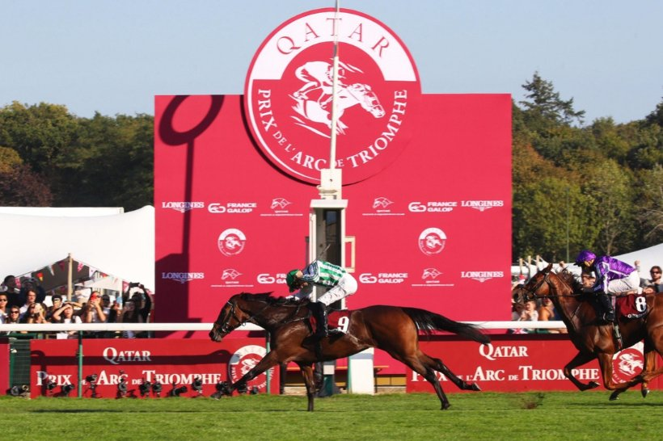

Miss Scott gana el Prix de l'Opéra y Soumillon llega a cinco victorias en la prueba
La británica Miss Scott, con Christophe Soumillon, se impuso en el Prix de l'Opéra Longines por cuerpo y medio y dio a The Thoroughbred Racing Corporation su segundo Grupo I del domingo en ParisLongchamp.

El primer Grupo I de la cuadra había llegado unas horas antes, con Green Empress en el Qatar Prix Marcel Boussac. Miss Scott completó el doblete en la carrera que en Francia apodan «el Arco de Triunfo de las hembras», dentro del fin de semana del Qatar Prix de l'Arc de Triomphe.
La llegada no dejó lugar a la discusión. Miss Scott sacó cuerpo y medio a la irlandesa Precise, y la francesa Pink Panthera, preparada en el centro de entrenamiento de Calas-Cabriès, entró tercera a otro cuerpo y medio.
Con tres años, Miss Scott encadena su segunda victoria consecutiva en carreras de Grupo y suma el primer Grupo I de su carrera. La preparan John y Thady Gosden.
Para Christophe Soumillon es la quinta victoria en el Prix de l'Opéra, tras las logradas con Terre à Terre en 2001, Mandesha en 2006, Dalkala en 2013 y Tarnawa en 2020. El jockey belga ya era el que más veces había ganado la prueba; ahora alarga su propio récord.
El domingo tuvo también lectura de cuadra. The Thoroughbred Racing Corporation, sello emblemático de los años noventa y dos mil, fue relanzada en 2022 por la familia del fallecido príncipe Ahmed bin Salman. La lectura es sencilla: cuatro años después de volver a las pistas, sus colores ganaron dos Grupos I en la misma jornada de ParisLongchamp.
— Redacción de Galope al Día